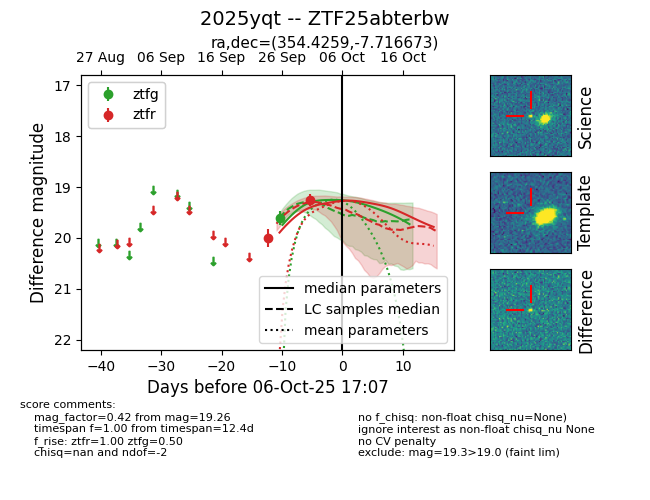
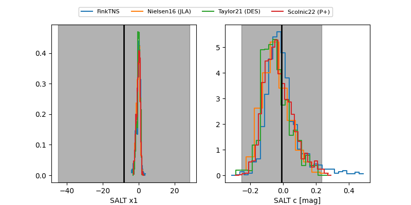

FINK: ZTF25abterbw
Lasair: ZTF25abterbw
ALeRCE: ZTF25abterbw
TNS: 2025yqt
YSE: 2025yqt
ZTF25abterbw (ztf,fink)
2025yqt (tns,yse)
equatorial (ra, dec) = (354.4259,-7.71667)
galactic (l, b) = (77.5478,-63.88398)


last ztfg=19.61, ztfr=19.26
1 ztfg, 2 ztfr detections